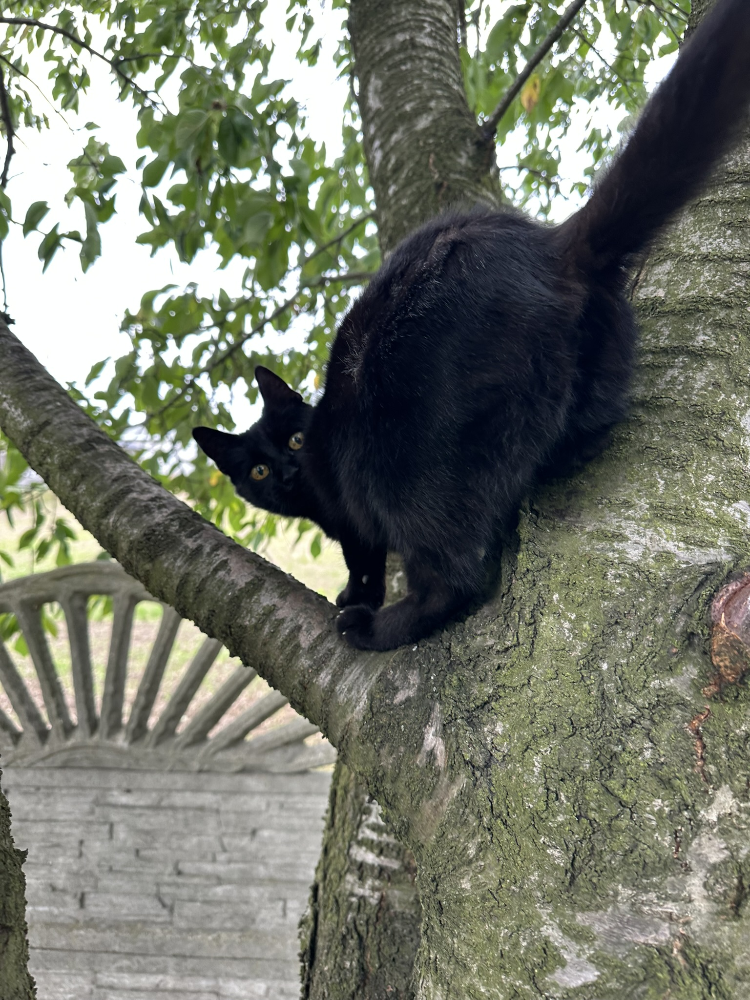
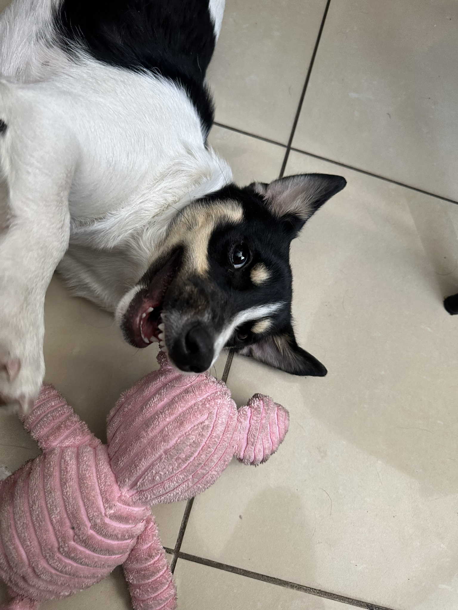
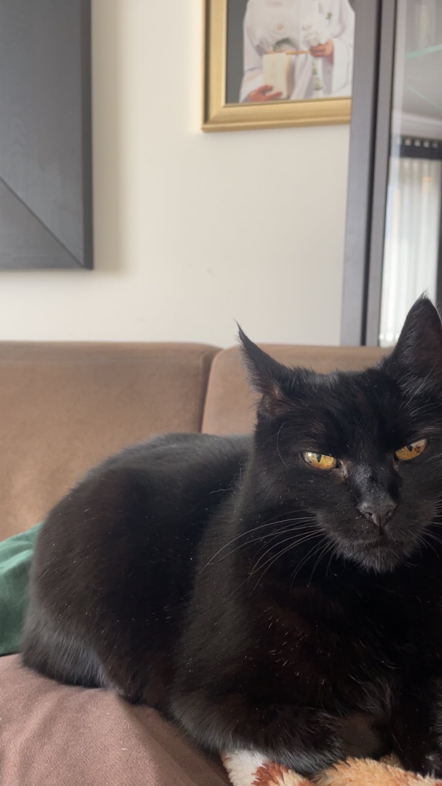
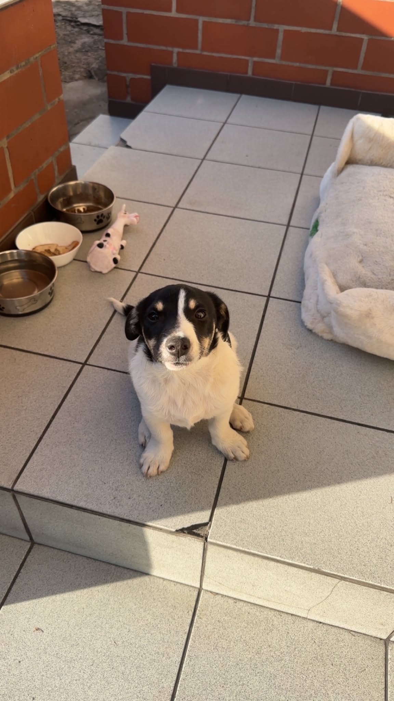
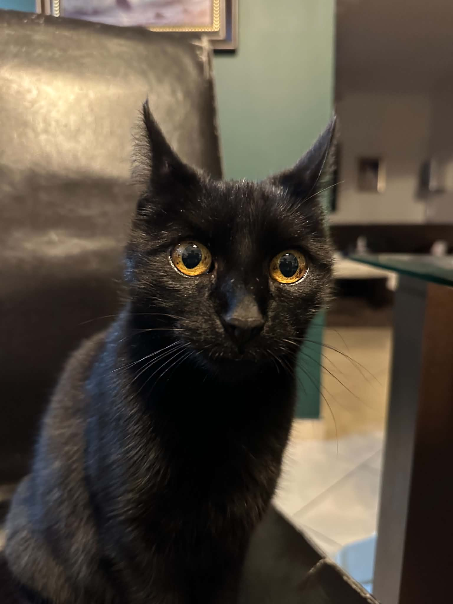
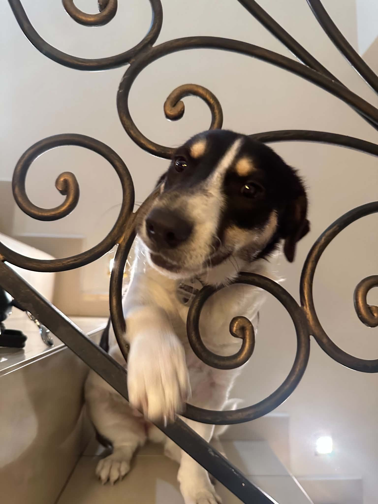
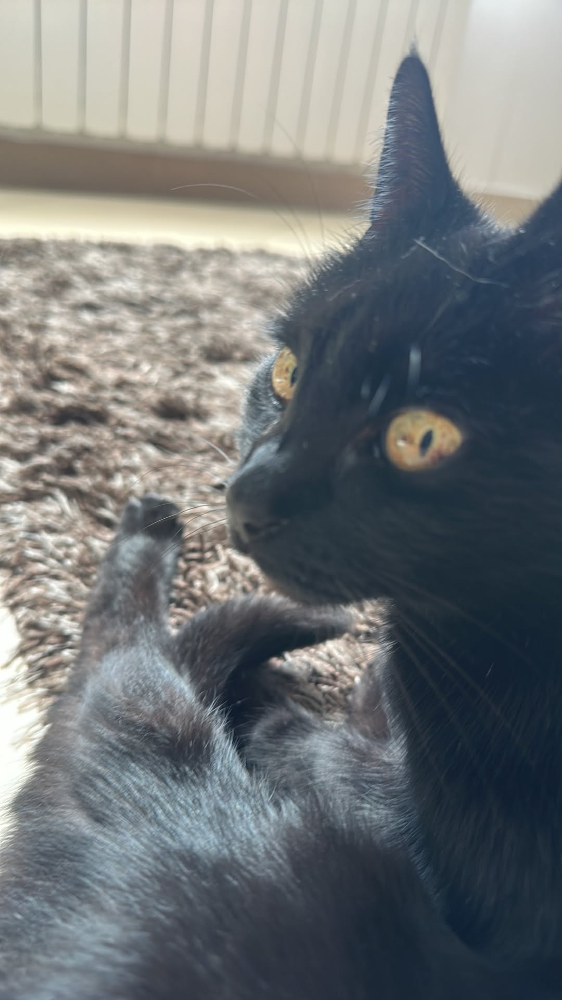
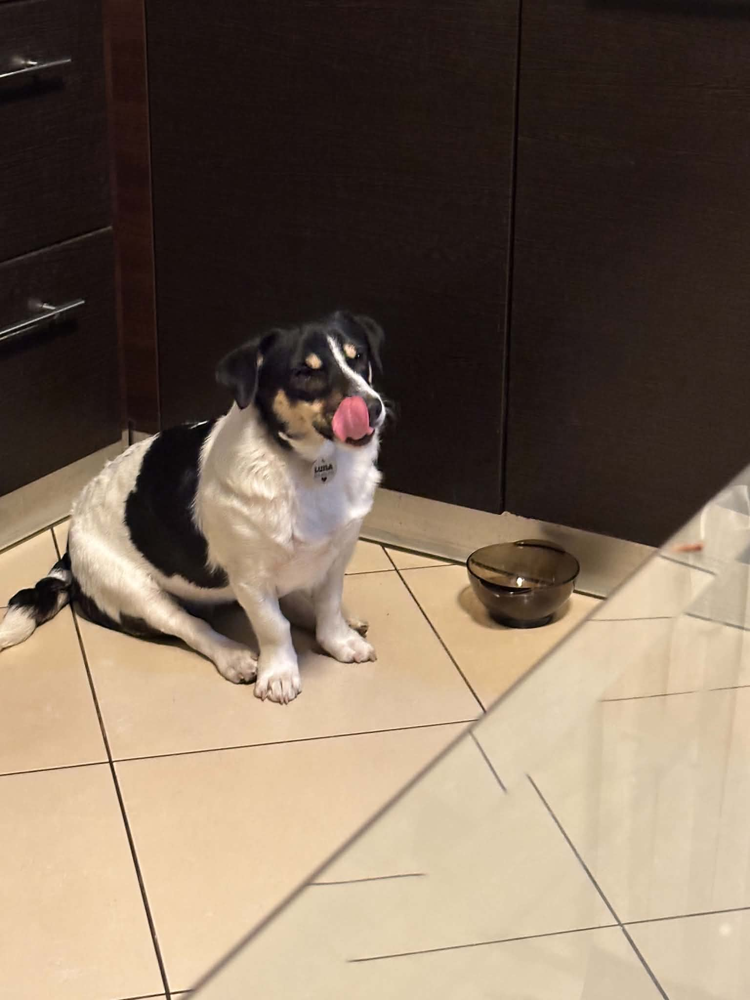

Babalu
Senior Tech LeadOaza spokoju z 16-letnim stażem. Czuwa przy biurku podczas każdego projektu, asystując przy nauce i pisaniu kodu. Po godzinach bezbłędna wspinaczka drzew i niezrównana łowczyni myszy.
Jest to najważniejszy zespół, który zapewnia ciągłe wsparcie podczas pracy dla mnie. Zawsze są przy mnie podczas pracy oglądajac moje projekty.

Oaza spokoju z 16-letnim stażem. Czuwa przy biurku podczas każdego projektu, asystując przy nauce i pisaniu kodu. Po godzinach bezbłędna wspinaczka drzew i niezrównana łowczyni myszy.

Pełna energii, ciągle w biegu i zawsze chętna do zabawy kosztem snu. Uwielbia leżeć na plecach i domagać się głaskania. Choć bywa małą niezdarą, w Babalu widzi swój największy autorytet.






Podgląd naszej pracy i aktywności w zespole.